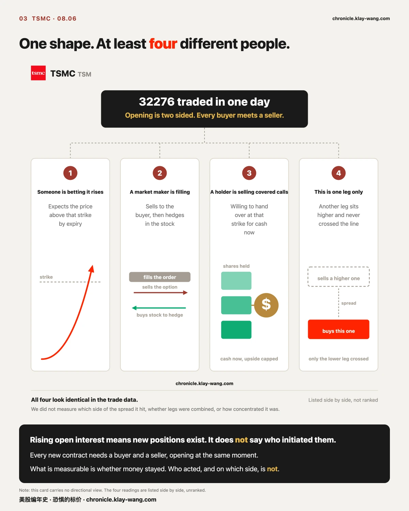
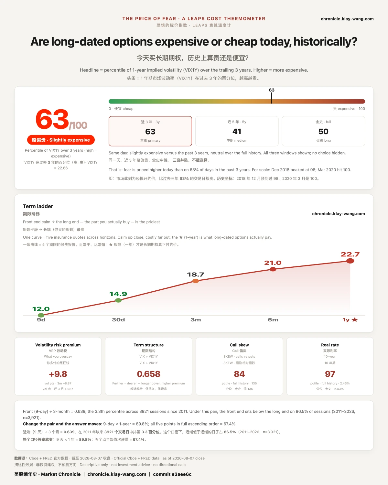

台积电，从牛夫人变成了小甜甜？· 08-07
按张数，它是当天长天期看涨里的第一名：第二名是它自己的另一档 19977 张，第三名只有 6176 张，不到它的五分之一。
但它到底留下了多少，我们答不了。 那把尺子这一次读不出来，08.08 才有。答不了就说答不了。
一 · 台积电这笔大单，手把手拆一遍

一句话：这一节把一笔大单从头到尾拆开，你以后看任何一笔都能照着做。
第一步：先看它相对存量有多大，不是看绝对数字
三万多张听起来很大，但大不大要有个参照物。最好的参照物是那一档自己此前积攒下来的量。
08.06，台积电那档 12.18 到期、行权价 560 的看涨合约成交 32276 张。而进入这一天时，那一档总共只有 4383 张还活着的合约。
一天的成交量，是存量的 7.36 倍。
同一天同一个到期日，行权价 500 那一档成交 19977 张，存量 8538 张，2.34 倍。也高，但差着量级。
这个倍数说明的是量级，不是去向。 它告诉你这一天在那一档上发生的事，相对于它此前的全部，大了六倍不止。它不告诉你这些量最后留下了多少。
第二步：分清成交量和建仓，这是散户最容易被骗的地方
成交量不等于建仓。
一张合约成交，可能是两个人新开一个仓位，也可能是有人开仓、有人平仓，还可能是同一批人当天开当天平、收盘时谁都没留下。这三种在成交量这个数字上长得一模一样。
分辨的办法只有一个：看隔夜结算之后的未平仓量。 未平仓量是现在还活着的合约数，它每天收盘后结算一次，改不了也不能刷。把第二天的未平仓量减去前一天的，再除以成交量，就是沉淀率。
这把尺子我们用过，而且算得出来。 08.05 闪迪那档 08.07 到期的看涨，成交 6477 张，未平仓量从 1684 变成 2144，只多了 460 张，沉淀率 7.1%；看跌那档是 9.7%。九成以上当天开当天平，那批钱不是仓位，是当天来当天走的流水。
但台积电这一次，这把尺子读不出来。
原因很具体：那两档只在 08.06 越过了异常线，08.07 没有（当天量掉下去了）。我们手上因此没有它们 08.07 的未平仓量，减不出那个差。又直接问了券商的实时行情，三档报回来的数和 08.06 的记录一个数都不差，说明那一栏还没纳入 08.06 当天的成交。
所以本期不给沉淀率。 能说的是 7.36 倍这个量级，说不了的是它留下了多少。
这两件事真的不一样：一个量的是这一天有多大，一个量的是这一天留下了什么。把前者当后者用，就是把热闹当成了仓位。08.08 那一天的数出来，我们回来补。

第三步：换算成你熟悉的单位，看看是多少钱
一张合约对应 100 股。32276 张就是 322.76 万股。
按那个行权价算，名义上对应 18.07 亿美元的台积电股票；按 08.07 的收盘价 420.04 算，是 13.56 亿美元。
而付出去的权利金是 3573 万美元。
这个金额有口径：权利金 ＝ 张数 × 当天收盘价 × 100，不是逐笔成交均价。振幅大的日子这个算法会失真；台积电 08.06 振幅不大，所以这个估算比较可靠，但口径要写出来。
一条勘误：08.06 那期我们写的是 560 看涨 3632 万。按上面这个口径复算，正确的数是 3573 万，我们那天多报了 59 万（偏高 1.7%）。原因是那个数当时是手填进图里的，没有算式，也就没有任何东西会在它错的时候报警。已经发出去的那一期不回改，这条勘误带日期挂在这里。 另一档 500 看涨的收盘价这次取不到，那一档和两档合计的数，我们暂时都不给。
为什么值得记一笔：花几千万，拿到的是十几亿的名义敞口。这是期权和股票最根本的区别，它不是便宜的股票，它是有到期日的杠杆。到期那天，要么兑现，要么归零，没有第三种结果，也没有拿住等等看这个选项。
第四步：想清楚这个形状能由几种人做出来
这一步最容易被跳过，也最要紧。
开仓是双向的。 一张新合约诞生，必须有一个人买、有一个人卖，两边同时开仓。所以未平仓量增加这句话，买方和卖方同时成立。
下面这四种人做出来的形状长得一模一样：
① 有人押它涨。 认为这只票在到期前会走到那个价位以上。
② 做市商在接单。 有人买入，做市商就是卖方，这不是看空，这是接单。卖完之后他会去买股票做对冲。做市商的仓位不表达观点，它表达的是别人下了什么单。
③ 长期持股的人在收租。 一家本来就拿着台积电的机构，觉得短期涨幅有限，愿意在那个价位卖掉，那就现在先收一笔钱。这是备兑，它同时是看多（继续持股）和限制上行。
④ 这只是一条腿。 很多机构不会裸买远虚值，而是同时买一个价位、卖一个更高的价位，实际成本低得多。你看到的可能只是其中一条腿，另一条腿没过异常线。
我们没测过成交打在买价还是卖价一侧，没测过多腿组合，没测过集中度。 所以这四种，一种都排除不掉。
能测的和不能测的，边界就在这里：钱留没留下，可测；谁主动、押哪一边，不测。

第五步：问一句为什么是这只票
它同时满足了三个条件，而这三个条件是可以事前看出来的。
流动性。 台积电的期权链在各个到期月都有交易，从周度到一年以上都有活跃的价位。一笔三万张的单子要找到对手方，首先得有一个接得住的市场。
波动率不高不低。 08.07 收盘，它的三十天隐含波动率 42.09，一年期 46.5，而这个数在它自己近期的分布里排在 51.4 百分位，正中间。这个位置是关键：太低，卖出去收不到钱；太高，买进来太贵。 正好在中间，两边的人都愿意坐上桌。
它有明确的价格结构。 08.07 的墙位是下方 400、上方 420，而收盘正好 420.04，贴着上方那道墙。
第六步：第二天回来看它有没有跟进
08.07，台积电那个到期月里再次过线的只剩一档下方的合约，08.06 那两档一档都没有再过异常线。正股 08.07 收 420.04，涨 0.44%。
这是一个事实，不是一个判断。 它可能意味着建仓已经完成，也可能意味着后面还有，也可能意味着剩下的量没有大到过线。我们只记录它没有再过线。
第七步：写下这条判断怎么才算错
第一条：按张数，08.06 那一笔是当天长天期看涨里的第一名，且一天的量是那一档存量的 7.36 倍。
作废条件：如果 08.08 那一档的沉淀率很低（比如低于两成），那这一笔就该按换手读而不是按建仓读，本期所有关于规模的叙述都要重新称一遍。
第二条：产业链一起建仓这个解释，在规模上撑不住。
作废条件：如果接下来几个交易日，同侪身上出现同一量级的新建（不是几百张，是上万张），本期的孤立判断作废。
08.08 开盘就能验第一条，我们回来对。
二 · 其他个股
一句话：同一天别的票也在动，但动的方式和台积电不是一回事。
半导体这一圈：动静不是零，是差两个量级
最容易讲的故事是：有人在押人工智能这条产业链继续超预期。如果是这样，同一天别的票身上应该看得见同一件事。
我们把 08.06 同日全市场长天期的异常成交按票拆开，看每一家自己最像新建的那一笔（成交量与未平仓量之比最高、且成交量不低于 500 张的那一档）：
| 票 | 最像新建的那一笔 | 成交量与存量之比 |
|---|---|---|
| 台积电 | 32276 张 | 7.36 |
| 英伟达 | 1704 张 | 0.98 |
| 英特尔 | 803 张 | 1.70 |
| 美光 | 770 张 | 0.52 |
| AMD | 522 张 | 3.20 |
| 博通 | 500 张 | 0.35 |
动静不是零。 AMD 那一笔 3.20、英特尔那一笔 1.70，都在新建的范围里。
但规模差两个量级。 台积电那一笔是 32276 张，而同侪里最大的一笔是 1704 张，还是英伟达那笔比值 0.98 的纯换手。
英伟达最值得看：它当天在长天期上榜 31 条，是全场最热闹的一只，但成交量最大的那笔（5468 张）比值只有 0.18，最像新建的那笔（1704 张）也只到 0.98。热闹归热闹，钱在原地换手，没有净增。
这是一个否定性的结论，它不告诉你这笔钱要干什么，只告诉你有一种解释可以先划掉。这种结论没人爱写，因为它不好卖。但辨别就是从划掉开始的。
08.07 当天：钱几乎全压在下周四
08.07 收盘一轮，权利金按票汇总，前四名是：
| 票 | 当日异常成交权利金 |
|---|---|
| SPCX | 2.01 亿美元 |
| 英伟达 | 7974 万 |
| 特斯拉 | 6124 万 |
| 美光 | 1473 万 |
这四家的钱几乎全押在 08.14 到期，也就是下周四。而形状四家四个样：
SPCX 是一整条阶梯。 110 / 115 / 120 / 125 / 130 / 135 / 140 七个价位全部过线，而且越往上，成交量相对存量的比值越高：110 那档 0.91，140 那档到了 4.91。低价位那几档更像在原有仓位里换手，高价位那几档更像新开出来的。
特斯拉是相邻两档一起被打。 330 和 335 两个价位，比值 5.17 和 7.28，都远高于 1。两档同时出现这种比值，说明这不是在既有仓位里倒手。
英伟达是热闹但没净增。 210 那档比值 1.90，而 225 那档成交 35081 张、比值只有 0.92。同一只票、同一个到期日，一档像新建，一档像换手。
美光那一笔最简单。 900 看涨一档，4189 张，比值 2.31。
同一天，四种完全不同的形状。 台积电是一档独大押到四个月后；SPCX 是一条七级阶梯押到下周；特斯拉是相邻两档同时新开；英伟达是热闹但原地换手。把它们混在一起说成一句资金在做多科技股，那句话就什么都没说。
这一段全部止步于形状，第一节第四步那四种人在这里同样成立，一种都没排除掉。
温度计

恐惧的标价指数 08.07 读数 63.4，一年期波动率 22.66。
我有个恐惧温度计，量的就是市场现在花多少钱给未来一年买保险。保险越贵，说明市场越怕。 63.4 分的意思是，贵到过去三年的前 37%。
这一周它降了四个交易日，非农那天回了一下：08.03 是 68.1，08.04 是 67.9，08.05 降到 63.6，08.06 是 61.5，08.07 回到 63.4。
这个数字不是给买保险的人看的，是给卖保险的人开的价。它不告诉你下周涨跌，它告诉你，那批必须给未来一年报价、并且要为报错付钱的人，08.07 报了多少。
期权异动与逐票数据 → chronicle.klay-wang.com/options
温度计读数与两个台账 → chronicle.klay-wang.com
这两页每个交易日收盘后自动更新，页上带日期，改不了也补不回去。
English edition
Subject line
TSMC went from ignored to wanted overnight, 08.07
Three lines
- On 08.06 one TSMC strike expiring 12.18 traded 32276 contracts, while the entire strike held just 4383 open contracts entering that day. One day's volume ran 7.36 times the open interest standing there.
- By contract count it was the largest long dated call trade of the session: second place was TSMC's own other strike at 19977, and third place only 6176, under a fifth of it.
- But how much of it stayed, we cannot say. That ruler cannot be read this time. It arrives on 08.08. When we cannot answer, we say so.
1. Taking one large trade apart, step by step
In one line: this section pulls a single large trade apart end to end, so you can do the same with any other.
Step one: measure it against the open interest, not against your intuition.
Thirty thousand contracts sounds large, but large needs a reference. The best reference is what that strike had already accumulated.
On 08.06, TSMC's 12.18 expiry, strike 560 call traded 32276 contracts. Entering that day, the whole strike held only 4383 live contracts. One day's volume ran 7.36 times the open interest.
Same day, same expiry, strike 500 traded 19977 against 8538 open, a ratio of 2.34. High, but an order apart.
That multiple measures scale, not outcome. It says how large the day was against everything the strike had built before. It does not say how much of it stayed.
Step two: separate volume from position building.
Volume is not position building. A contract trades when two people open, when one opens and one closes, or when the same people open and close within the day. All three look identical in the volume figure.
There is exactly one way to tell them apart: open interest after the overnight settle. It is the count of contracts still alive, it settles once after each close, and it cannot be inflated. Next day's open interest minus today's, divided by volume, is the retention rate.
We have used that ruler and it worked. A SanDisk strike expiring 08.07 traded 6477 contracts on 08.05, and open interest went from 1684 to 2144, up only 460. A retention rate of 7.1%, with 9.7% on the put side. Over ninety percent opened and closed the same day. That money was not a position, it was flow.
For TSMC this time, that ruler cannot be read. Those strikes cleared the anomaly threshold on 08.06 but not on 08.07, so we hold no next day open interest and cannot take the difference. We also asked the broker's live quote directly and got figures identical to our 08.06 capture across three strikes, which means that column has not yet taken in 08.06's trading.
So we publish no retention rate this issue. We can speak to the 7.36 multiple. We cannot speak to what stayed.
This is not modesty. The two are genuinely different measurements: one says how large the day was, the other says what the day left behind. Treat the first as the second and you have mistaken activity for a position. The 08.08 figures will settle it and we will come back.
Step three: convert it into units you already understand.
One contract covers 100 shares. 32276 contracts is 3.2276 million shares. At that strike, notionally $1.807 billion of TSMC stock; at the 08.07 close of 420.04, $1.356 billion.
The premium paid was $35.7 million.
A note on that figure: premium equals contracts times that day's close times 100, not an average of individual fills. On a wide range day the method distorts; TSMC's 08.06 range was narrow, so the estimate is reasonable, but the method has to be stated.
A correction. Our 08.06 issue put that strike's premium at $36.3 million. Recomputed under the method just stated, the correct figure is $35.7 million. We overstated it by 1.7%. The number had been typed in by hand rather than computed, so nothing existed that would have caught it. The published issue stands uncorrected; this dated erratum is the record. For the 500 strike we could not retrieve a close today, so that figure and the two strike total are both withheld.
Why it is worth logging: tens of millions bought well over a billion in notional exposure. That is the fundamental difference between options and stock. It is not cheap stock. It is leverage with an expiry date. On that date it either pays or it goes to zero. There is no third outcome, and no option to simply hold and wait.
Step four: work out how many kinds of participant produce this shape.
Opening is two sided. A new contract requires a buyer and a seller opening at the same moment. So rising open interest is true of both sides at once.
These four produce an identical shape in the data:
One, someone betting it rises. They expect the price above that strike by expiry.
Two, a market maker filling an order. Someone buys, so the maker is the seller. That is not a bearish view, it is a fill. Afterwards they buy stock to hedge. A market maker's position expresses what someone else ordered, not what they think.
Three, a holder selling covered calls. An institution already long TSMC, seeing limited near term upside, is willing to sell at that strike and take cash now. That is simultaneously bullish on holding and a cap on upside.
Four, one leg of a spread. Institutions rarely buy far out of the money outright. They buy one strike and sell a higher one, at far lower net cost. What you see may be one leg, with the other never crossing the threshold.
We did not measure which side of the spread the trade hit, whether legs were combined, or how concentrated it was. So none of the four can be ruled out.
The line between measurable and not sits exactly here: whether money stayed is measurable; who initiated it and on which side is not.
Step five: ask why this name.
Liquidity. TSMC's option chain trades across every expiry month, from weekly out past a year. A thirty thousand lot order first needs a market that can absorb it.
Volatility neither high nor low. At the 08.07 close, thirty day implied volatility was 42.09 and one year 46.5, and that reading sits at the 51.4th percentile of its own recent distribution. Dead centre. That position matters: too low and selling raises nothing, too high and buying costs too much. In the middle, both sides will sit at the table.
A clear price structure. On 08.07 the walls stood at 400 below and 420 above, and the close was 420.04, right against the upper one.
Step six: come back the next day and check for follow through.
On 08.07, the only strike in that expiry to clear the threshold again was one below. Neither of the 08.06 strikes crossed again. The stock closed 420.04, up 0.44%.
That is a fact, not a judgment. It could mean the position is complete, it could mean more is coming, it could mean the remaining size was not large enough to flag. We record only that it did not cross again.
Step seven: write down what would make this wrong.
First claim: by contract count, the 08.06 trade was the largest long dated call of the session, and one day's volume ran 7.36 times that strike's open interest.
What voids it: if the 08.08 settle shows a low retention rate on that strike, say under twenty percent, this reads as churn rather than position building, and every statement about scale above has to be reweighed.
Second claim: the supply chain building together does not hold up on scale.
What voids it: if peers show new positions of the same order over the coming sessions, not hundreds of contracts but tens of thousands, the isolation claim is void.
08.08 settles the first one, and we will come back to it.
2. The other names
In one line: other names moved the same day, but not in the same way.
Semiconductor peers: not still, but two orders smaller.
The easy story is that someone is betting the AI supply chain keeps beating. If so, the same day should show it in other names too. We split 08.06's flagged long dated trades by name and took each one's most new looking trade, the highest volume to open interest ratio among trades of at least 500 contracts:
| Name | Most new looking trade | Volume to open interest |
|---|---|---|
| TSMC | 32276 contracts | 7.36 |
| Nvidia | 1704 | 0.98 |
| Intel | 803 | 1.70 |
| Micron | 770 | 0.52 |
| AMD | 522 | 3.20 |
| Broadcom | 500 | 0.35 |
Movement was not zero. AMD at 3.20 and Intel at 1.70 both sit in new position territory.
But the scale differs by two orders. TSMC's trade was 32276 contracts against a largest peer trade of 1704, and that one was Nvidia's, at a ratio of 0.98, pure churn.
Nvidia is the one worth reading. It was the busiest name on the board with 31 flagged long dated entries, yet its largest trade by volume, 5468 contracts, ran a ratio of only 0.18, and even its most new looking trade reached just 0.98. Busy, yes. But the money changed hands in place. Nothing was added.
This is a negative result. It does not tell you what the money intends. It tells you one explanation can be crossed off. Nobody enjoys writing these, because they do not sell. But discernment starts with crossing things off.
08.07 itself: the money sat almost entirely on next Thursday.
Aggregating 08.07's closing round of flagged trades by name, the top four:
| Name | Flagged premium that day |
|---|---|
| SPCX | $201 million |
| Nvidia | $79.7 million |
| Tesla | $61.2 million |
| Micron | $14.7 million |
Almost all of it expires 08.14, next Thursday. And the four shapes are four different things.
SPCX is a full ladder. Strikes 110, 115, 120, 125, 130, 135 and 140 all cleared, and the higher the strike, the higher the ratio: 0.91 at 110, rising to 4.91 at 140. The lower rungs look more like churn within existing positions, the upper rungs more like newly opened ones.
Tesla had two adjacent strikes hit together. 330 and 335, at 5.17 and 7.28, both far above 1. Two neighbouring strikes showing that at once is not turnover inside an existing book.
Nvidia was busy without adding. The 210 strike ran 1.90, while the 225 strike traded 35081 contracts at a ratio of only 0.92. Same name, same expiry, one strike looking new and one looking like churn.
Micron was the simplest. One strike, 900 calls, 4189 contracts, ratio 2.31.
Four completely different shapes on a single day. TSMC, one strike dominating, four months out. SPCX, a seven step ladder into next week. Tesla, two adjacent strikes opened together. Nvidia, loud but changing hands in place. Collapse all of that into one sentence about money getting long tech and the sentence says nothing at all.
This section stops at shape. The four kinds of participant from step four apply here in full, and not one of them has been ruled out.
Thermometer
The Fear-Price Index read 63.4 on 08.07, with one year volatility at 22.66.
The thermometer measures one thing: what the market currently pays to insure the next year. The dearer the insurance, the more the market is afraid. A reading of 63.4 means it is dearer than on 63% of days in the past three years.
It fell for four straight sessions and ticked back on payrolls day: 68.1 on 08.03, 67.9 on 08.04, down to 63.6 on 08.05, 61.5 on 08.06, and back to 63.4 on 08.07.
This number is not for the people buying protection. It is the price quoted by the people selling it. It says nothing about next week. It says what those who must quote a year ahead, and who pay when they quote wrong, were charging on 08.07.
Options activity, name by name → chronicle.klay-wang.com/options
The thermometer and both ledgers → chronicle.klay-wang.com
Both pages update automatically after each close, carry their date, and cannot be edited afterwards.
本站不提供投资建议，不预测方向，不做择时。